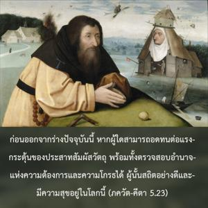
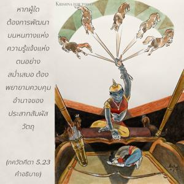

ก่อนออกจากร่างปัจจุบันนี้หากผู้ใดสามารถอดทนต่อแรงกระตุ้นของประสาทสัมผัสวัตถุ พร้อมทั้งตรวจสอบอำนาจแห่งความต้องการและความโกรธได้ ผู้นั้นสถิตอย่างดีและมีความสุขอยู่ในโลกนี้


หากผู้ใดต้องการพัฒนาบนหนทางแห่งความรู้แจ้งแห่งตนอย่างสม่ำเสมอต้องพยายามควบคุมอำนาจของประสาทสัมผัสวัตถุซึ่งมีอำนาจของการพูด อำนาจของความโกรธ อำนาจของจิตใจ อำนาจของท้อง อำนาจของอวัยวะเพศ และอำนาจของลิ้น ผู้ที่สามารถควบคุมอำนาจของประสาทสัมผัสต่างๆเหล่านี้ได้ทั้งหมดรวมทั้งจิตใจ เรียกว่า โคสฺวามี หรือ สฺวามี โคสฺวามี เหล่านี้ใช้ชีวิตอยู่แบบควบคุมได้อย่างดี และสลัดทิ้งซึ่งอำนาจของประสาทสัมผัสทั้งหมด ความต้องการทางวัตถุเมื่อไม่สมประสงค์จะทำให้เกิดความโกรธเช่นนี้จิตใจ ดวงตา และหน้าอกจะเกิดอาการเร่าร้อน ฉะนั้นเราต้องฝึกควบคุมประสาทสัมผัสก่อนที่จะออกจากร่างวัตถุนี้ ผู้ที่สามารถทำได้เช่นนี้เข้าใจได้ว่าเป็นผู้รู้แจ้งแห่งตน และมีความสุขอยู่ในระดับแห่งความรู้แจ้งแห่งตน เป็นหน้าที่ของนักทิพย์นิยมที่ต้องพยายามอย่างแข็งขันในการควบคุมความต้องการและความโกรธ